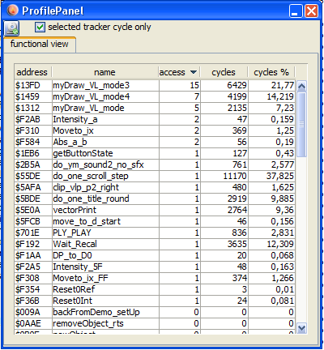

profi window
Note!
In order to use the profiler you have to enable it before the emulation starts (vecxi window opens). You can configure profiling in
configuration→Disassembler: enable profiler
The profiling as of now is limited to two things:
count accesses to an instruction
count cycles executed
Access
are counted and displayed in the profi window.
Cycles
Are counted for each subroutine and displayed as "sum till return" and displayed. Cycles are also displayed as percent of total execution time.
Note:
Since tracking of a subroutine is done via watching the stack (changes) - it might be possible to get "false" results in the profiler if you do heavy stack manipulations within your program.
Modes
The profiler can run in two modes:
non tracker mode
Here the complete runtime of the current vectrex program is counted and displayed
tracker mode
This mode is only available if a tracki window is actively open. In this mode the program locations that lie in between the given tracking addresses are watched (usually one vectrex round) and displayed.
The display in profi always shows the last complete "track" round.
If profiling is enabled (and the columns in the dissi table are also enabled: "PR access" and "PR cycles") you can also watch the cycles/accesses in dissi - for each instruction!